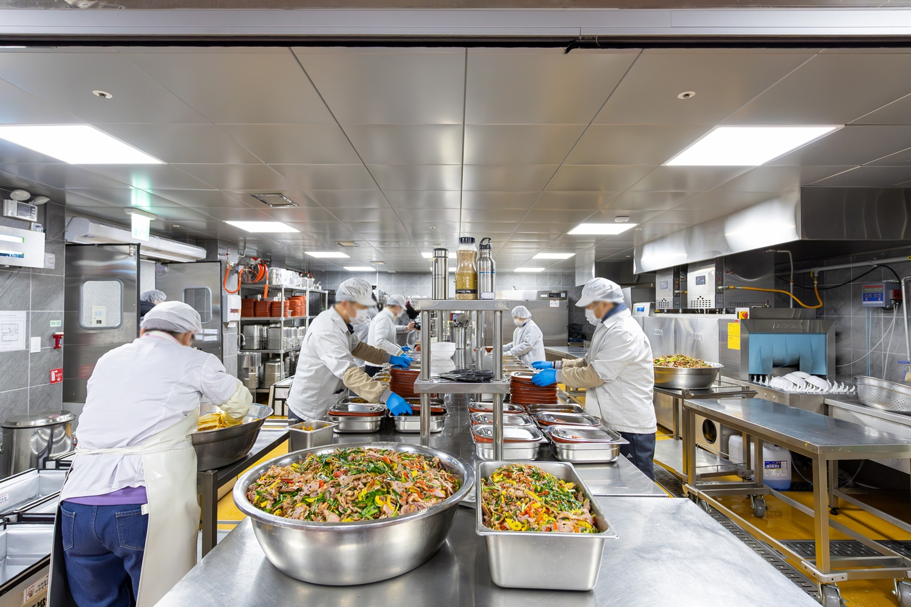

마포구, 전국 최초 반찬공장 기반 경로당급식 확대 운영
반찬공장 직배송 경로당 급식, 2027년 100개소 확대 계획

[시사포커스 / 김재록 기자] 마포구(구청장 유동균)는 전국 최초로 공공 반찬공장에서 직접 조리한 국과 반찬을 경로당에 공급하는 ‘어르신밥상 경로당급식 확대 시범사업’을 9월 1일부터 지역 내 경로당 15개소에서 본격 추진한다. 마포구에 따르면, 반찬공장 영양사가 어르신의 영양과 섭취 편의성을 고려해 식단을 구성하고, 식재료 검수부터 조리·포장·배송까지 일관 처리한다. 참여 경로당은 배송된 국과 반찬으로 공휴일을 제외한 주 5일 중식을 제공하며, 경로당에서는 이용 인원에 맞춰 밥만 취사하면 된다. 새로 참여하는 15개 경로당의 급식 규모는 일평균 약 400명이며, 기존 거점급식을 포함한 전체 39개 경로당 급식 규모는 일평균 약 1,200명에 이를 것으로 예상된다.
유동균 마포구청장은 “기존 어르신밥상 거점급식에서 나아가 경로당 회원까지 식사 지원을 확대했다”며 “반찬공장에서 직접 생산한 국과 반찬을 경로당에 공급하는 마포구의 노인 공공급식체계는 전국에서 처음 시도하는 새로운 모델”이라고 말했다. 이어 “후원에 의존하지 않고 공공재원을 바탕으로 안정적인 급식 기반을 갖춰 식사와 안부 확인, 건강관리, 돌봄 연계까지 이어지는 든든한 노후 지원을 강화하겠다”고 덧붙였다. 마포구는 그동안 종교시설·공공시설 등 거점급식기관을 중심으로 ‘마포형 공공 노인급식체계’를 구축해 ‘어르신밥상’을 운영해 왔으며, 이번 사업은 후원금 의존에서 벗어나 공공재원을 활용해 급식 품질·위생·운영 안정성을 강화하는 방식으로 전환했다는 점에서 의미를 갖는다.
마포구청은 올해 12월까지 시범운영 결과를 분석하고 이용 어르신과 경로당 관계자의 의견을 수렴해 운영 방식을 보완한 뒤, 2027년부터 경로당급식을 100개소, 일평균 2천 명 규모로 단계적으로 확대할 계획이다. 아울러 급식 출결을 어르신 안부 돌봄망으로도 활용해, 장기간 급식을 이용하지 않거나 건강 악화·돌봄 공백 등 위기 징후가 확인된 어르신은 동주민센터와 연계해 필요한 건강·복지 서비스를 지원할 방침이다. 경로당급식 참여 경로당 및 이용 방법은 마포구청 어르신정책과 또는 가까운 동주민센터로 문의하면 안내받을 수 있다.